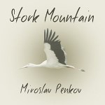

Stork Mountain: A Novel (March 2016, Farrar, Straus and Giroux)
 In
Stork Mountain, a
young Bulgarian immigrant returns to the country of his birth in
search of his grandfather, who suddenly and unexpectedly cut all
contact with the family three years ago. The trail leads him to a
village on the border with Turkey, a stone's throw away from Greece,
high up in the Strandja Mountains − a place of pagan mysteries and
black storks nesting in giant oaks; a place where every spring,
possessed by Christian saints, men and women dance barefoot across
live coals in search of rebirth. Here in the mountains, he gets
drawn by his grandfather into a maze of half-truths. And here, he
falls in love with an unobtainable Muslim girl. Old ghosts come back
to life and forgotten conflicts blaze anew until the past surrenders
its shameful secrets.
In
Stork Mountain, a
young Bulgarian immigrant returns to the country of his birth in
search of his grandfather, who suddenly and unexpectedly cut all
contact with the family three years ago. The trail leads him to a
village on the border with Turkey, a stone's throw away from Greece,
high up in the Strandja Mountains − a place of pagan mysteries and
black storks nesting in giant oaks; a place where every spring,
possessed by Christian saints, men and women dance barefoot across
live coals in search of rebirth. Here in the mountains, he gets
drawn by his grandfather into a maze of half-truths. And here, he
falls in love with an unobtainable Muslim girl. Old ghosts come back
to life and forgotten conflicts blaze anew until the past surrenders
its shameful secrets.
Interviews etc.
Barnes and Noble Review | Where the Maenads Danced: M. Penkov on Stork Mountain
Electric Literature | Miroslav Penkov on Falling in Love with Bulgaria and the Making of Stork Mountain
Fiction Writers Review | Maybe the World is a Story: an Interview with Miroslav Penkov
The Guardian | Literary Mixtape: Miroslav Penkov cranks up Radiohead and Queen on the shores of the Black Sea
The Rumpus | Interview with Miroslav Penkov
Longlisted for the 2016 Center for Fiction First Novel Prize
A few words of praise
"[A] searing, heartfelt novel. This book is rich, enmeshing the personal with the political and historical, told in strange and vertiginous language that seems fitting for a tale of such passion."
-- Publishers Weekly, starred review
"Stork Mountain is a beautiful and haunting novel, one that delves into a painful past and begs the questions: To what extent are we doomed to relive the past and carry it with us? At what point must we relent and set it free?"
-- Hilary Rice, Chicago Review of Books.
"[A] sprawling, wildly ambitious novel... thoughtful and thought-provoking, with a passionate faith in the redemptive powers of art."
-- Wendy Smith, The Boston Globe.
"[W]hat the Great Bulgarian Novel could be if it could be rendered in English... Stork Mountain takes wing to the heights."
-- Steven G. Kellman, The Dallas Morning News.
"It is hard to believe Miroslav Penkov is younger than I am, born in 1982, when the experience of reading him is akin to reading the authors of Western classics... [Stork Mountain] is a gorgeous, ambitious, sprawling, multi-dimensional baroque tale of going back to one's ancestral home--in this case a Bulgarian-American man looking for his grandfather, who has gone missing. The political and the mystical, the historical and the spiritual, all intertwine in unexpected ways, as coming-of-age meets love story in this stunning debut."
-- Porochista Khakpour, The Barnes and Noble Review.
"An intelligently mapped plot complements the skilful blend of familial relationships with religious commentary, and elements of the hamlets' folklore and rituals lend an added mystery; the story brims but doesn't feel crowded... This is a historically rich study of borders: those imposed by cartography and those that are self-constructed."
-- Zoe Apostolides, The Financial Times.
Stork Mountain is a timely novel when Europe--its entangled past and its uncertain future--occupies the headlines; it is a timeless tale too about the undying and undead, about dreams not paled by reality, and above all, about a young man's search for an answer by searching for the right question. What a tremendous achievement from one of the best young international writers.
--
Yiyun Li,
author of Kinder
Than Solitude and Gold Boy, Emerald Girl.
A Bulgarian Don Quixote fighting windmills, his Sancho Panza a lost American grandson, and Dulcinea a Turk overfond of smoking dope. Add a smattering of Christian firewalkers, a touch of Muslim clerics, thousands of hysterical storks who deliver more secrets than babies. What you get is a marvel of a novel. Penkov has written a rollicking, poignant delight.
--
Rabih Alameddine,
National Book Award Finalist and author of An Unnecessary Woman.
I can't speak to Miroslav Penkov's standing among Bulgarian novelists, but now that I've read Stork Mountain, it is easy to say that Penkov is my favorite novelist publishing in America.
--
Kyle Minor,
author of Praying
Drunk.
Miroslav Penkov writes with warmth, wit and emotional precision, and Stork Mountain is a gorgeous and big-hearted novel that manages to be both a page-turning adventure story and a nuanced meditation on the meaning of home. This is a fantastic book.
--
Molly Antopol,
author of The
UnAmericans.
Buy in the US
Amazon
Barnes & Noble
Indie Bound
Books-A-Million
Buy internationally
Amazon
UK (Sceptre)
Amazon
Canada (FSG)
Audiobook (Audible)

Narrated by Kirby Heyborne (Tantor)